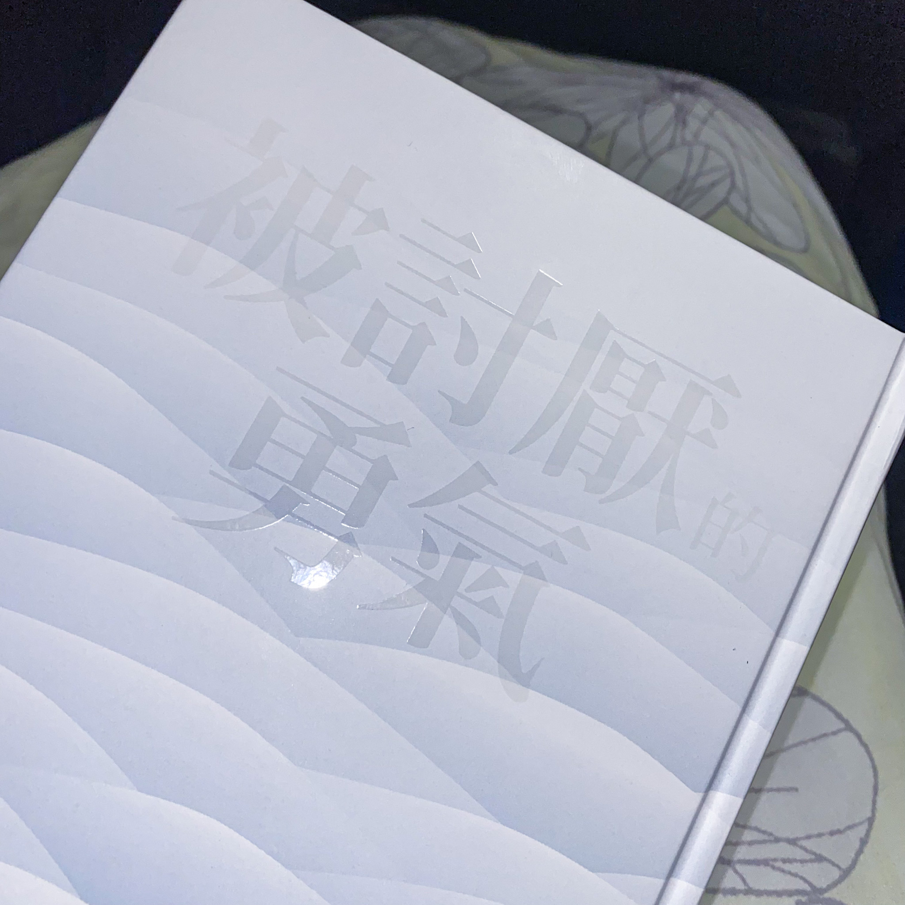
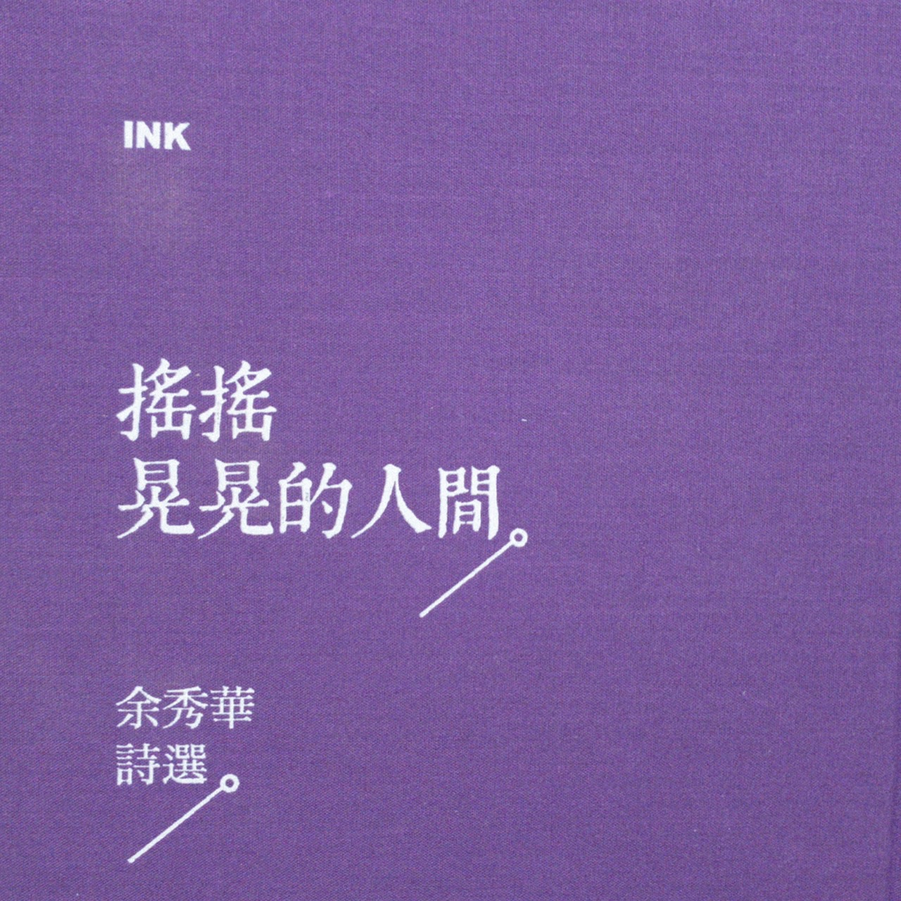
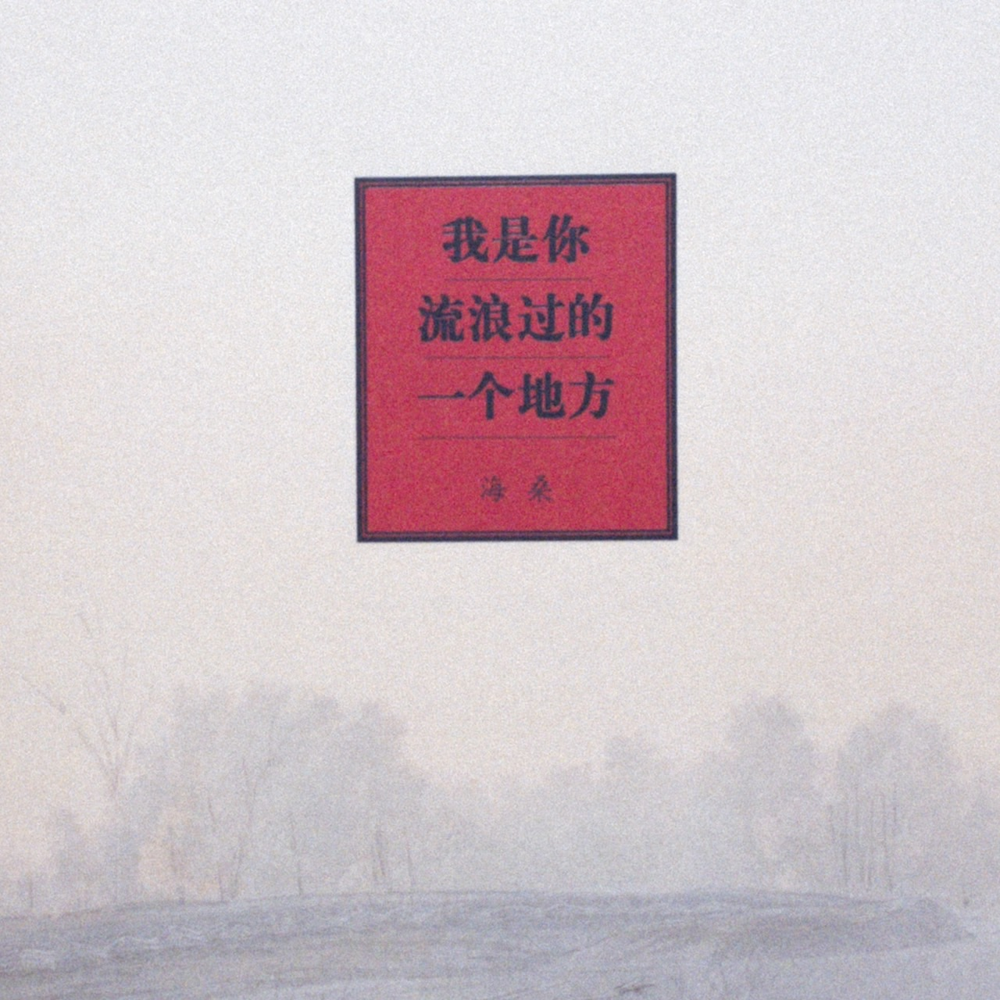
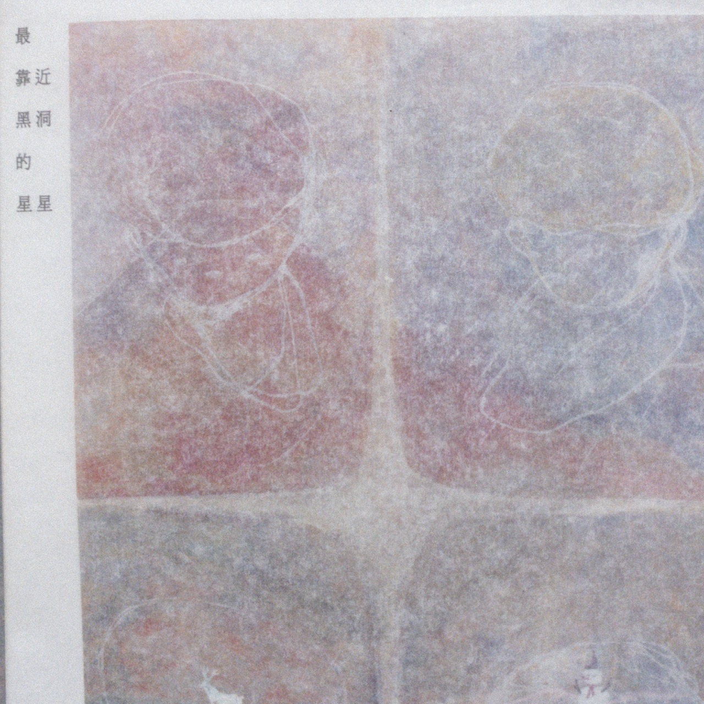
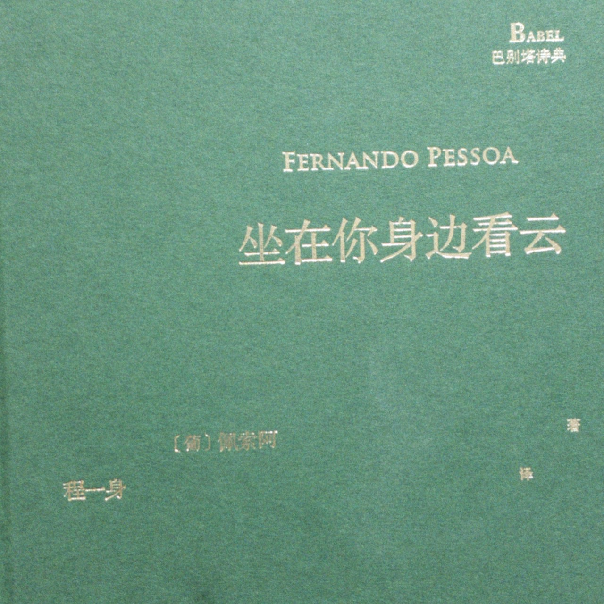

    
我曾經也是容易自卑，太在意他人想法的人，常常被他人的想法支配，也常常羨慕別人。
這本書教會了我，為了「他人的期望而活」，是失去自由的一種選擇。
我也領略到了，我們做事前不妨好好想想，我們在做的事情真的是我們要的嗎?還是只是為了獲得他人的認可、為了獲得他人的喜歡呢?也許我們都該鼓起勇氣，去被討厭，才能活得更自由。
以下是我在書中最有感觸的句子：「在害怕關係崩壞的恐懼下過日子，其實只是為別人而活，是不自由的生活方式。」
這本書的作者，余秀華，是名現代詩人，她的文字很直白，甚至可以說是有些露骨，但看著她使用那樣的詞語描繪出一種既深沉又清幽的畫面，讓我有種找回平靜的感覺。
因此吸引我的並不是那些很夢幻美好的文字景象，而是那既深刻又純樸的平凡生活縮寫，與複雜又溫柔的情感交織而成。
她所寫下的篇章就像她的情感日記，樸實卻不會乏味，我們經歷過的事情也許不同，但卻有著同樣的心情，這種感覺十分奇妙。
作者，海桑，也是個詩人，非常熱愛寫詩，他的詩集篇幅都不長，很適合帶出門，沒事的時候翻閱看看也能放鬆心情。這本書是早在十年前就已經出版，但是我最近才發現它。
首先是它的書名就非常吸引我，把自己比喻成一個地方，就好像那些曾經在我們身邊的人，即使現在已經離去，但在我的生命裡路過了，也短暫的在我的記憶裡待過了，我也只是他們流浪過的一個地方，不是他們該停留的地方。
他的文字純粹，是能讓人停留在一種幻想的，感覺像在秋季的樹下，看著落葉被風吹落的感覺，既輕鬆又能使人遐想。
詩詞裡充滿著陽光與泥土，家人與朋友，上帝與人們，一切都是那麼乾淨純粹。
有一句話是我特別喜歡的，他說：「我只能用盡我的一生去愛有限的幾個人。」
作者，湖南蟲，他的文字是有點抽象，甚至有點科幻，有時是難以想像的，幾乎整個宇宙都含括進了他的詩詞裡，也代表他使用整個宇宙的事物去解釋他所有的思想與情緒，是個很有藝術感的一位詩人。
他的詩篇裡無一不透露出他對一個人的想念與渴望，就像單戀或失戀的那種心情，只有自己在單相思時，無論對著宇宙如何吶喊，對方也感受不到你的熱烈，看著他的詞句，有種很失落又空洞的情緒。
這本書裡有好幾篇都是我很喜歡的，像是《人形容器》、《不重要的事》、《愛別來無恙》。
作者，費爾南多·佩索亞，是19世紀的一位偉大的詩人，他所傳達的詩句與思想也廣泛流傳至今。
這位作者的詩詞是我認為與我的性格和想法最為貼近的，因為他是靠寫詩維生，所以字裡行間也些許透漏著他除了寫詩，對其他事情都興致缺缺，連他的愛人他都能與她斷聯幾十年。對他來說，寫詩似乎比其他事情都重要太多了，這讓我感覺很特別但又有種熟悉感。
因為也許有些人會覺得靠著賣詩維生是否太過不切實字，但對於有這種天賦的藝術家來說，他們只要有自己熱愛的事物，即使身旁沒有任何人，也不會感到孤單。
他的詩詞也充滿著許多美好的景色，有羊群與牧羊人、山巒與月亮、溪流與樹木。
像是透過永恆不變的大自然來襯托人事的善變，其中也看得出他現實主義的影子，因為他認為他所感受到的一切就是真理。
他也經常將自己比喻為自然之物，大自然之感受等同於他的感受，從他的詩篇裡能感受到既像哲學卻又玄幻的故事。